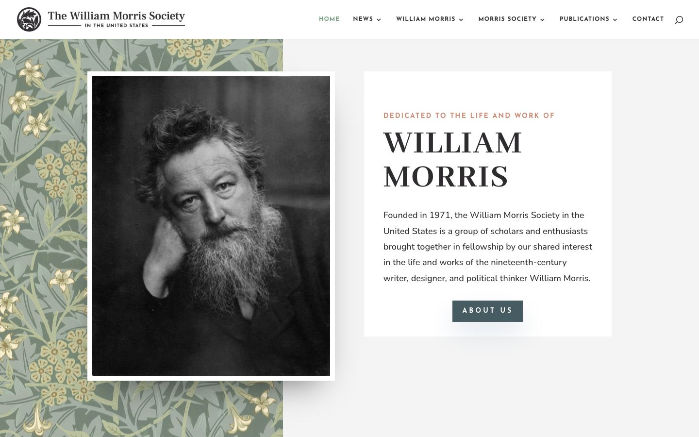

References / Website / 385
William Morris Society in the United States website
A standard modern template with one Morris wallpaper panel behind a framed portrait and a serif capital heading.
- Source
- morrissociety.org
- Creator
- William Morris Society in the United States
- Style
- Arts and Crafts (agent-proposed, not yet reviewed by a person)
- Moods
- Scholarly, calm
- Evidence
- Captured with
tools/capture.mjs(headless Chrome, 1440 × 900) on 28 September 2026 and inspected. The screenshot shows the first viewport; the measurement covers up to four screens. - Reviewed
- Rights
- Third-party work, stored with credit for commentary. License: unverified. Rights policy
Observed
- A Morris floral wallpaper in sage, cream, and yellow fills a panel on the left third of the page.
- A black-and-white photograph of Morris sits in a thick white frame with a soft drop shadow, overlapping the panel.
- On the right, a white card on light grey holds a small spaced-capital label in salmon, “WILLIAM MORRIS” in large dark serif capitals, and body text in a sans-serif.
- The “ABOUT US” button is slate blue with spaced white capitals and a soft shadow.
- The navigation uses small, spaced sans-serif capitals.
Why it belongs
The pattern is decoration beside a modern card layout. The soft shadows and spaced sans-serif labels are counter-signs in the rubric.
Measured: shadow share 0.27, one chromatic hue, and a median border of 6 px from the photo frame.
Borrow
Put a wallpaper panel behind a framed image instead of using a plain background colour.
Measured
Machine-extracted by tools/extract-traits.js on . Full measurement.
- Type families
- Nunito (82%), Josefin Sans (10%), Frank Ruhl Libre (6%)
- Type scale ratio
- 1.16
- Median radius
- 0 px
- Mean chroma
- 0.02
- Palette
- #ffffff 44%
- #f2f2f3 22%
- #bacdb0 13%
- #2e2c2f 11%
- #666666 7%
- #d3d3d3 1%
- #475b63 1%
- #cd8b76 0%

